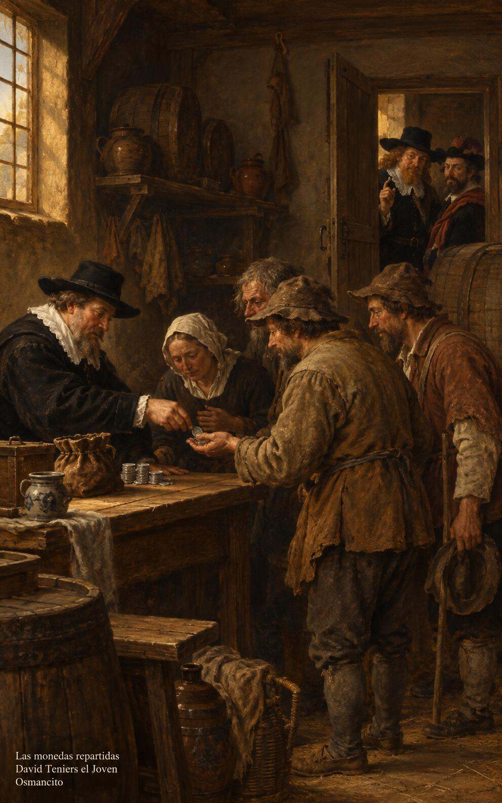

7 de noviembre de 2026
¡Buenos días!
Fieles en lo pequeño
28
Todo lo puedo unido a aquel que me da fuerza.
Filipenses 4,13. Fuente
Que seamos fieles en lo pequeño: en la moneda prestada, en la mesa puesta, en la palabra dada. Que el dinero sirva y no mande, y lo conviertan nuestras manos en amigos que nos aguarden más allá. Que nos bastemos con lo que tenemos, fuertes en aquel que nos sostiene, y no nos encuentre nadie sirviendo a dos señores, sino libres, agradecidos y de corazón firme, con la frente alta y los bienes verdaderos esperándonos.

- El administrador reparte las monedas entre los pobres mientras dos amos lo llaman: Lucas 16, la fidelidad que no se parte.
- El caminante avanza ligero hacia la luz del alba y deja atrás las monedas: Filipenses 4, la fuerza que basta para todo.
¡Feliz sábado 7 de noviembre!
😊🙋♂
© 2026 Osmancito